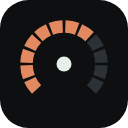

General
How often your usage is checked in the background. Refreshing by hand restarts the countdown.
Weekdays 13:00 to 19:00 UTC, shown in your local time.
claude.ai reports no figures for Free plans, so there is nothing to poll for. With this on, the extension reads the usage each reply carries, from the claude.ai tabs you already have open. It shows your session and weekly percentages after your next message. Pro, Max, Team and Enterprise accounts don't need it.
Your session usage as a small badge, so you can see it without opening the popup.
Appearance
Cozy uses warm colours and serif numbers. Classic is the original cool look.
System follows your computer's light or dark mode.
Used for the usage bars and buttons. Bars still turn amber and red as you near a limit.
Make the popup bigger or smaller. 100% matches the desktop widget.
For developers: restyle anything in the popup. It is applied after the built-in styles.
Account
Your account belongs to more than one. The popup shows the one you pick.
The extension uses the claude.ai session already in this browser, so there is no separate sign-in: sign in or out on claude.ai itself. It only ever talks to claude.ai, and your usage is kept on this computer.
About

Usage Meter for Claude
A free, open-source extension that shows your Claude session and weekly usage, reset times, and peak hours in one click.
Not affiliated with or endorsed by Anthropic. "Claude" is a trademark of Anthropic.
Report a problem, suggest a feature, or contribute on GitHub.